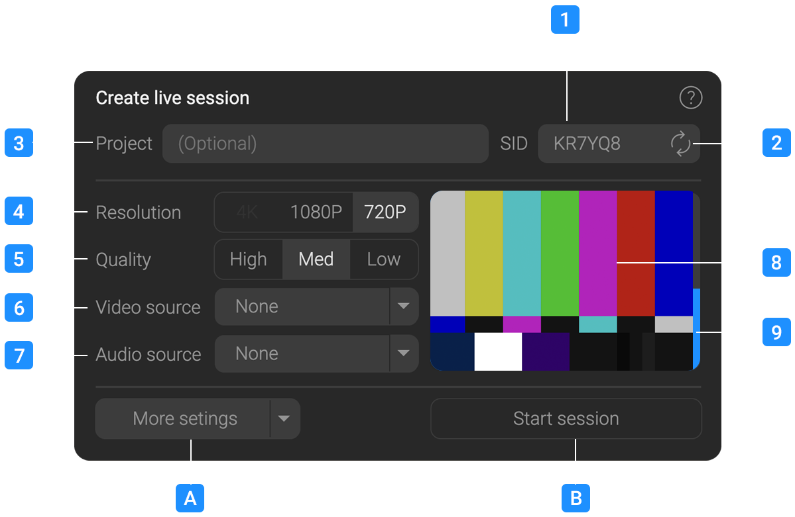
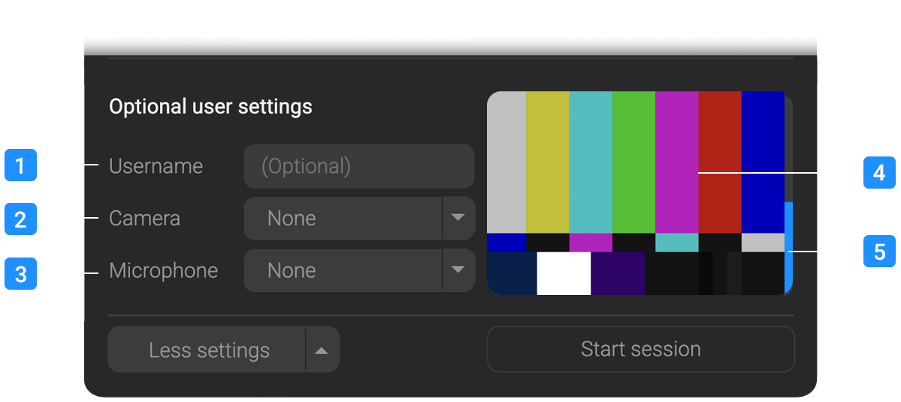

General Information
IMPORTANT! Currently only tested on Chrome.
The streaming page is only for desktop browsers, however streams can be viewed on most desktop and mobile devices using the chrome browser.
This application can only create streams from sources available to your browser, such as a webcam, display capture device, or a virtual camera source such as NDI or OBS Virtual camera.
You must allow your browser to access your webcam and microphone to use this application, see your browser settings if you are prompted.
For more information on browser permissions, click here.
Creating a session

These are the minimal options for creating a session and broadcasting a stream.
1
Session ID
This is randomly generated Session ID , but you can enter your own value if you wish.
This allows you to re-use a previous ID if you wish to continue or rejoin a previous session.
You are limited to 6 Alpha numeric characters, avoid using simple or easily guessable IDs to prevent unwanted guests joining (such as ABCDEF or 123456).
2
Random Session ID generator
Click to generate a random session ID.
3
Client
An optional field that will display a client name in the room title bar.
4
Resolution
The target resolution of the main stream that will be created.
Currently supported are full HD 1080P and 720P, 4K is still experimental at this time.
A higher resolution will require a more powerful machine to encode, this is changable later in the session.
5
Quality
This is the quality of the main stream that will be created.
Equivalent bitrate values are High : 16Mbps, Med : 8Mbps and Low : 4Mbps.
This is changable later in the session.
6
Video Source
This is the source of the video for the main stream you wish to publish.
Normally this would be a the video output of your editing or comping application looped back to a capture device, or a virtual camera source such as NDI or OBS Virtual camera.
Note: RPXL does not support Blackmagic or AJA capture devices as they do not present themselves to the browser as a webcam source.
This is changable later in the session.
7
Audio Source
This is the source of the audio for the main stream you wish to publish.
Normally this would be a the audio output of your editing or comping application looped back to a capture device, or a virtual audio source such as NDI or OBS Virtual camera.
This is changable later in the session.
8
Video source preview
Preview of the video source you have selected.
9
Audio source VU Meter
Preview VU of the audio source you have selected.
A
More setting button
Optional setting that allow you to add a microphone or camera to present yourself, see the following section for more information.
B
Create live session
Will create a live session with the settings you have selected.
You can create a session without a video or audio source and add them later, Only the Session ID and Client can not be changed later.
More settings

These are optional settings that allow you to add a microphone or camera to present yourself as a participant in the room.
If you use the quick link option these setting will be ignored, but if you wish to communicate with other participants in the room you will need to set these up.
1
Name
Your name, this will be displayed in the room for other participants to see. If you do not eneter a name it will default to "Presenter"
2
Camera
An optional camera source that will be used to present yourself in the room.
This is separate from the main stream and can be turned off or changed during the session.
3
Microphone
An optional microphone source that will be used to talk to others in the room.
This is separate from the main stream and can be muted or changed during the session.
4
Camera preview
Preview of the camera you have selected.
5
Microphone VU Meter
VU Meter of the currently selected microphone.
Main Interface

The main interface is divided into two main sections, users are listed on the left and the main stream is to the right.
1
Users
List of connected Guests.
Guests talking will be highlighted.
2
Main stream
A high resolution preview of your main stream using the selected camera and audio source.
3
Share icon
Allows you to share a link to the session with your clients.
There are 2 options, A main share link that will enable full comms with clients requiring them to connect with a microphone and enter a username.
They will be able to annotate the main stream and chat with you.
A quick link that will allow clients to view the main stream without a microphone or username, this is useful for clients who just want to watch the stream without interacting. or if you already have them on another communication channel such as Zoom or Teams and want to quickly share with them.
3
End session
Will end the stream and disconnect you from the session.
Note : clients will not be removed from the session and can continue to chat. The session will continue to exist until the last user disconnects.
To reconnect to session you will need to use the same Session ID and rejoin.
4
Setting menu
Allows you to change the Resolution, Quality, Video and source of the main stream.
See the previous section for more details.
Also allows you to change yoour username, camera and microphone
See the previous section for more details.
5
Mute Microphone
Allows you to mute your microphone.
Guests will still hear the main stream and b able to chat amongst themselves.
Note : this option will be disabled if you have not selected a microphone in the settings.
6
Dissable Camera
Allows you to turn off your camera to guests.
Guests will still see the main stream.
Note : this option will be disabled if you have not selected a camera in the settings.
7
Annotations
Annotations allow you to draw on the main stream for guests to see.
Tools are, the Marker, to draw on the main stream. A pallet to select different colours for the marker and an eraser that will clear the canvas.
Drawings by guests will be also be visible to all.
Drawings are limited to the size and aspect of the main stream and are not saved or recorded to the stream.
Note : Resizing the window or clicking the eraser will clear the annotations for all participants in the room.
8
Blind Stream (currently disabled)
Will turn off the main stream for all participants in the room.
This is useful if you want to stop the stream for a moment without ending the session.
9
Mute main stream locally
Will mute the main stream for you alone
This is useful if to stop feedback or if you already have audio output from another source.
Note : Participants will still recieve audio from the main stream and your microphone if enabled.
A
Main Stream local volume
Adjusts the local volume of the main stream, it does not affect any users.
Misc
Not having a central server introduces some benefits and some gotcha's that bear thinking about when using the application.
As all Guests are connecting directly to your machine and not a central server we recommend using wired ethernet. Wifi has inherit latency issues which will disrupt the stream.
If you are having issues with sync or dropped frames try this first.
Your host PC must be able to encode and transmit the video in real time while you are working (although this can be offloaded to another machine), a modern CPU & GPU is essential.
This app has been tested on modern Macs and although RAM is not an issue the more cores, the better.
Every extra guest that connects will increase the load on the hosts workstation, with a modern system and GPU, rooms of about a dozen people should be doable.
Guests connect at a very low resolution and very little bandwidth, typically under 80kbps per user, the majority of your bandwidth is prioritised to the main stream.
Guests are also connected directly peer to peer to one another so you do not need to process their audio or video locally to retransmit.